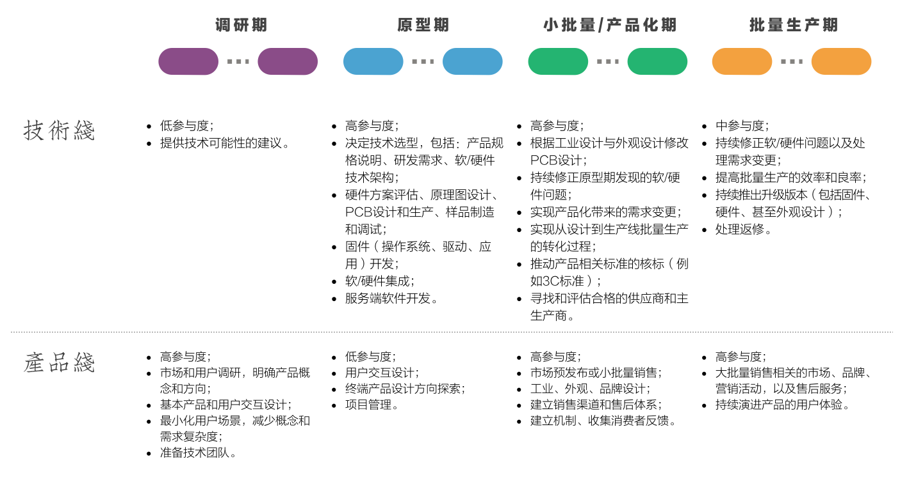
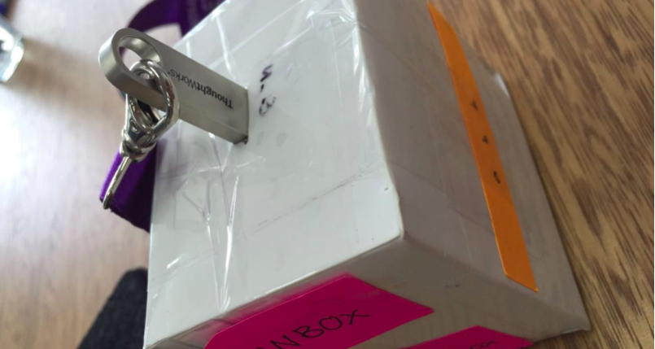
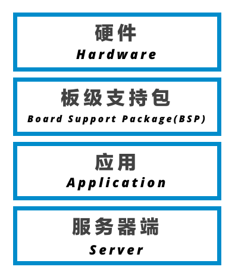
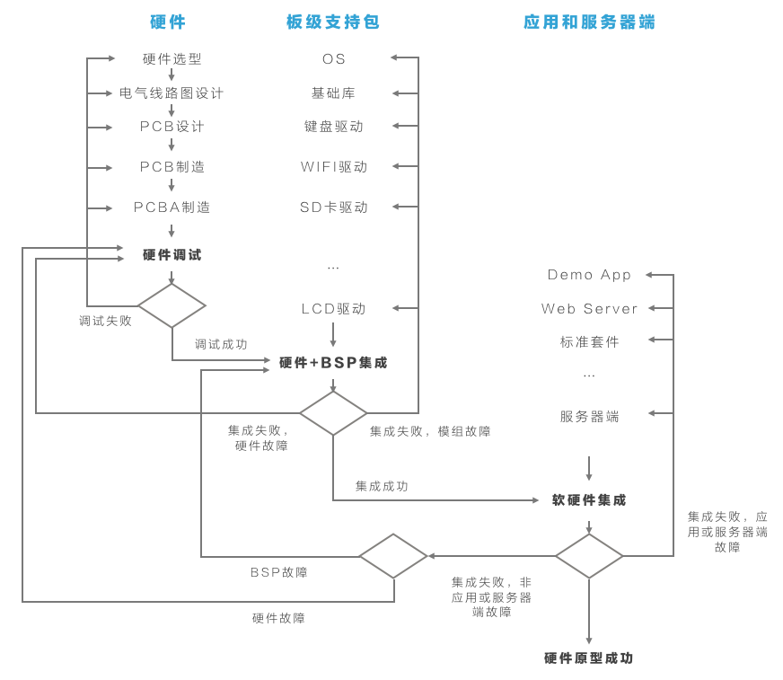
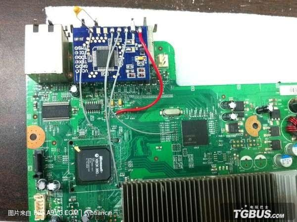

硬件产品的设计研发与软件产品有着诸多显著的区别，其中包括：
- 周期长，通常一个一般复杂程度的硬件产品研发周期在一年以上；
- 研发环节中涉及到的技术能力和实践特别多；
- 风险极大，返工几乎是必然的；
- 涉及到硬件的需求变更的成本极大；
- 传统精益/敏捷软件交付中的持续集成、持续反馈、精益设计等实践仍缺少最佳实践。
而新硬件产品的设计研发又使得整体风险和难度成倍增加，这里的新硬件产品是指：
- 缺少现有标准硬件方案；
- 新的用户使用场景；
- 多个已有方案的整合；
- 对于硬件选型有苛刻的要求。
过去8年里，我启动了几十个软件交付项目，启动一个硬件研发项目还是第一次，本文是我对本次启动的总结。
背景
启动前期对于该产品的产品逻辑已经有了较长时间的讨论，这些讨论最终成为原型期的输入，这些输入包括：
- 产品概念定义（Core Product Concept）；
- 客户价值主张（Customer Value Proposition）；
- 核心使用场景（Core User Scenarios）；
- 盈利模型（Profit Model ）。
这些输入本身与软件规划中的产品逻辑定义基本类似，可以视为两周新硬件产品原型期的必要输入。
原型期的核心产出是一个具有完整功能的软硬件技术方案验证，不包含产品化部分（工业设计、品牌等），这个验证方案将基于PCBA板或简单的外壳，结果将用于产品化。
整体规划
硬件产品的研发通常分为四个主要阶段，每个阶段大致划分产品和技术两条线，且比重不同。如下图所示：

两周原型期启动完成了产品团队和技术团队第一次「集成」，目标是让技术团队能够顺利地进入原型期，而其成败，是真正「0到1」成功的关键。
在两周的时间里，我们规划了四个方面的工作：
产品需求
产品需求部分与软件项目启动非常类似，我们对之前需求调研期中总结出来的产品概念、客户价值主张、核心使用场景、盈利模型重新探讨。值得注意的有三点：
使用实体原型体会产品交互
和软件产品不同，硬件产品往往构建了新的「交互范式（Interaction Paradigm）」，其中包括：
- 全新的使用场景；
- 全新的使用设备：
- 多种交互模式进行配合。
在这个背景下，我们使用了大量体验式原型（Experience Prototype ），例如用纸盒子代表未来产品，加上一系列道具，让技术人员进行角色扮演，亲自体会未来产品的使用场景、反复重复，并把操作过程拍摄成短片。这比文档或者设计稿的方式更加有效。
 (使用纸盒制作的体验式原型)
 (让技术人员亲自操作体验式原型，体会产品交互)
(让技术人员亲自操作体验式原型，体会产品交互)
尽可能核心的产品逻辑
和硬件方案相比较，工作在硬件平台上的软件本身风险较小，因此保持一个最精简的概念模型，保证端到端产品「可使用」便可，这里遵循软件研发中概念精简的原理，在此不做赘述。在真实项目里，我们假设了一个最简单的端到端需求场景，并考虑在原型期结束前保证需求锁定，把重点放在重大的硬件技术风险上。
规划产品未来
硬件规划不能只考虑一个简单的需求场景，一个硬件平台需要考虑未来2年到3年的产品需求，以下几个因素将帮助硬件架构师规划硬件平台：
- 2到3年内产品功能将扩展到什么样子；
- 预测的市场价格是多少；
- 预测的月出货量有多少；
- 期待的产品毛利润是多少；
- 期待的产品单位成本是多少；
- 产品生命周期是多长。
通过以上三点的理解，技术团队对需求、产品概念、以及规划有了足够的理解，在此之上将进入技术规划的讨论。
技术规划
一个典型的硬件技术方案将分为四个层次，它们分别是：

硬件
在产品原型期，硬件部分的工作风险最大，因此其他三个部分的工作统一由硬件研发牵引，我们将考虑六个重要的里程碑，每个里程碑需要有其他工作项的产出物进行配合：
电气原理图设计（Schematic Design）
基于对硬件平台和组件的选择，产出适合的电气原理图；
PCB设计（PCB Layout）
基于电气原理图，产出PCB（Printed Circuit Board）设计，PCB板设计是给第三方厂商定制PCB和PCBA的重要设计文档；
打样（PCB/PCBA Manufacture）
选择合适的第三方厂家生产设计好的PCB以及PCBA。
硬件调试（Hardware Debug）
对第三方厂家生产好的PCBA板进行电气特性调试。
硬件BSP集成（Hardware + BSP Integration）
在通过电气特性调试的PCBA板上集成已完成的BSP组件，并进行测试和排障。
软硬集成集成（Hardware + Module + Application Integration）
对已完成的应用或服务器端软件与PCBA板、BSP组件进行集成测试和排障。
板级支持包（BSP）
板级支持包部分包含了多种必须基于硬件的软件组件，这里包含：
- 操作系统加载器（Bootloader）；
- 定制化操作系统（OS）；
- 标准化或定制化的驱动（Drivers）；
- 某些特定套件（Suits）；
- 基本库（Libraries）；
- UI框架（UI Framework）。
某些套件不需要依赖硬件方案确定即可开始独立研发，例如一个特定需求的基本库；而大部分BSP组件的研发都需要等到硬件方案确定后、获得评估套件（Evaluation Kits，由硬件厂商提供）才可以进行。
应用
应用部分的工作指不需要硬件平台即可以独立运行的软件，例如Web Server；某一特定第三方软件包，例如一个P2P文件传输的框架；以及客户端应用程序的研发，例如一个基于Linux的Demo App。
服务器端
服务器端包含产品可能需要的服务器端软件，例如一个数据传输硬件的寻址服务器（Addressing Server）。
风险模型
硬件项目在原型期的风险模型跟传统软件研发完全不同，作为项目管理者，需要建立全新的风险模型。理解硬件项目在原型期的风险有如下两点：
首先，最大的风险来自于硬件定制化本身，BSP和软件（包含独立应用和服务器端）需要与硬件方案产生多次集成；
其次，每次集成中，出现的问题都可能产生在硬件本身、BSP或软件，一旦发生硬件本身的错误，都必须回到硬件设计阶段——进行重新打样、修改PCB设计、修改电气原理图设计、甚至重新进行硬件选型。
下图展示了一个硬件项目在原型期中的风险模型：

每一次向上的箭头都是一次风险，特别到了后期的软硬件集成，某个硬件设计的故障可能导致整个硬件原型研发的全面返工，甚至失败。
作为硬件产品研发的项目经理，应该尽可能推进完成三大调试或集成点，并为项目规划留出缓冲时间，到项目后期的集成，返工工作量可能成倍增加，对于项目风险的控制应该极为小心。
特别指出的是，涉及到PCB/PCBA板的制造，通常需要第三方厂商配合、时间周期长、且相对固定，在项目管理中应给予足够的重视。在真实的硬件研发中，硬件工程师通常会使用一些暂时性的手段（Workarounds）将硬件调试推进到下一个测试环节、以期待暴露更多的问题，再统一一次性解决，这样可以减少PCB返工的时间。
 (图中的电线就是硬件工程师经常使用的「飞线」，用于暂时修正PCBA的故障，统一集中问题一次性返工解决。)
项目规划
工作线
硬件项目规划与软件项目不同，在一开始就需要拆分出工作线（Working Stream），各工作线的启动依赖如下：
- 硬件线：依赖于供应商的支持；
- BSP线：依赖于供应商的支持（如相关资料、评估套件等）；
- 应用线：无依赖；
- 服务器端：无依赖。
除硬件和BSP工作通常依赖于供应商之外，其他工作线皆可以并行启动，项目经理可根据资源情况，以及未来硬件调试或软硬集成的时间，倒推出工作线启动时间。
角色与能力
由于硬件产品研发的特殊性，在技术线方面，至少需要以下背景的工程师：
硬件工程师：熟悉各厂商硬件方案的区别，可以根据产品需求转化成电气原理图设计和PCB设计、在市场寻找合适的供应商、最终生产出PCB和PCBA，并在后续的研发中负责硬件调试，以及和供应商的沟通、协作、管理进度；
嵌入式软件开发工程师：与硬件工程师合作，完成硬件选型，在选定厂家的评估套件上完成BSP的开发，并在后续的硬件调试、集成测试中，与硬件工程师、应用软件工程师合作，排查和修复与嵌入式软件相关的故障；
应用软件工程师：完成应用层和服务器端软件的开发、供终端用户使用。
特别指出的是，通常嵌入式软件开发工程师和应用软件工程师的区分没有那么明显。
从产品线考虑，硬件产品研发与软件产品研发类似，至少需要以下三种角色：
产品经理：不必要的复杂度可能增加硬件研发的风险，用户体验在前期需要让步于技术风险，产品经理需要保护产品需求不被扩大或颠覆性变化，在核心产品逻辑不变的情况下改进产品体验；
交互设计师：硬件产品通常涉及新的交互范式，交互设计师没有现有交互方式作为参考，特别需要系统式的交互设计逻辑，最好拥有人因工程设计的背景，再加上硬件产品物理性的特点，需要设计师反复考虑使用场景和环境限制；但是，值得指出的是，在原型期并不涉及到产品的结构、外观、材料等设计，设计可能只是在界面交互层次；
项目经理：不像软件研发，很多工种可以互换、形成特性团队，硬件产品研发流程复杂、工种之间相对独立，这对于沟通和协作产生了极高的要求，再加上外部合作方（工厂、方案提供商）的参与，项目管理难度极大；除沟通协作之外，控制高风险也是摆在项目经理面前重要的工作，多次软硬集成测试的问题、合作方的拖延、多条研发线的拖延，都可能让项目走向失败。
评估
敏捷软件开发中的评估采用相对复杂度的方式，这种评估方式的基础是：
- 基于一个模糊分工的团队（倾向于全功能团队）；
- 由一个对团队能力、系统复杂度有充分了解的软件技术带头人完成；
而硬件产品研发中目前还难以建立全功能团队，能力和角色难以整合；技术带头人极少拥有硬件、嵌入式、软件三种研发背景，复杂度在三种不同体系下是否可以比较，也值得商榷。
因此，使用传统敏捷软件开发中的评估方法，对硬件产品研发工作量进行估计，我持有保留意见，这种方式是否有效、还需要时间和实践来检验。
写在最后
本文是对一次通过两周时间启动一个新硬件产品原型期的总结，在这个过程中，我们做了如下几件事：
- 重新定义产品；
- 产出核心用户交互体验；
- 对技术路线图进行规划；
- 识别工作线；
- 识别关键角色和能力；
- 对时间点进行最好和最坏的估计；
- 对项目管理方式达成一致。
总体来说，硬件产品研发的复杂度、风险、管理难度都超过了软件产品研发，是否可以借用敏捷软件开发中的方法，还需要时间验证。对于一个硬件产品而言，留给自己和大家思考的是：
- 如何管理产品需求？
- 如何演进用户体验？
- 如何估计工作量？
- 如何提前暴露风险？
- 如何对硬件产品进行持续集成？